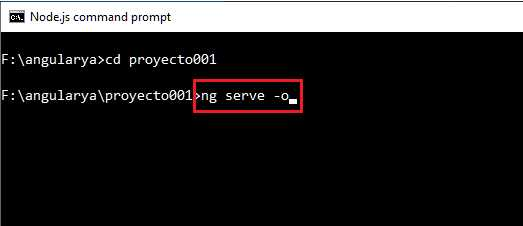
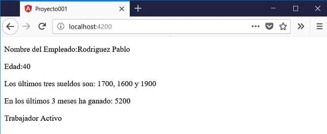

Una de las características fundamentales en Angular es separar la vista del modelo de datos. En el modelo de datos tenemos las variables y en la vista implementamos como se muestran dichos datos.
Modificaremos el proyecto001 para ver este concepto de interpolación.
Abriremos el archivo que tiene la clase AppComponent (app.component.ts) y lo modificaremos con el siguiente código:
import { Component } from '@angular/core';
@Component({
selector: 'app-root',
templateUrl: './app.component.html',
styleUrls: ['./app.component.css']
})
export class AppComponent {
nombre = 'Rodriguez Pablo';
edad = 40;
email = 'rpablo@gmail.com';
sueldos = [1700, 1600, 1900];
activo = true;
esActivo() {
if (this.activo)
return 'Trabajador Activo';
else
return 'Trabajador Inactivo';
}
ultimos3Sueldos() {
let suma=0;
for(let x=0; x<this.sueldos.length; x++)
suma+=this.sueldos[x];
return suma;
}
}
La clase 'AppComponent' representa los datos de un empleado. Definimos e inicializamos 5 propiedades:
nombre = 'Rodriguez Pablo'; edad = 40; email = 'rpablo@gmail.com'; sueldos = [1700, 1600, 1900]; activo = true;
Definimos dos métodos, en el primero según el valor que almacena la propiedad 'activo' retornamos un string que informa si es un empleado activo o inactivo:
esActivo() {
if (this.activo)
return 'Trabajador Activo';
else
return 'Trabajador Inactivo';
}
El segundo método retorna la suma de sus últimos 3 meses de trabajo que se almacenan en la propiedad 'sueldos':
ultimos3Sueldos() {
let suma=0;
for(let x=0; x<this.sueldos.length; x++)
suma+=this.sueldos[x];
return suma;
}
Veamos ahora el archivo html que muestra los datos, esto se encuentra en 'app.component.html':
<div>
<p>Nombre del Empleado:{{nombre}}</p>
<p>Edad:{{edad}}</p>
<p>Los últimos tres sueldos son: {{sueldos[0]}}, {{sueldos[1]}} y {{sueldos[2]}}</p>
<p>En los últimos 3 meses ha ganado: {{ultimos3Sueldos()}}</p>
<p>{{esActivo()}}</p>
</div>
Para acceder a las propiedades del objeto dentro del template del HTML debemos disponer dos llaves abiertas y cerradas y dentro el nombre de la propiedad:
<p>Nombre del Empleado:{{nombre}}</p>
Cuando se tratan de vectores la primer forma que podemos acceder es mediante un subíndice:
<p>Los últimos tres sueldos son: {{sueldos[0]}}, {{sueldos[1]}} y {{sueldos[2]}}</p>
Finalmente podemos llamar a métodos que tiene por objetivo consultar el valor de propiedades:
<p>En los últimos 3 meses ha ganado: {{ultimos3Sueldos()}}</p>
<p>{{esActivo()}}</p>
Cuando ejecutamos nuestra aplicación desde la línea de comandos de Node.js:
En el navegador aparece el contenido de la vista pero con los valores sustituidos donde dispusimos las llaves {{}}:
En principio podríamos decir que si los datos son siempre los mismos no tiene sentido definir propiedades en la clase y sustituirlos luego en el HTML, pero luego veremos que las propiedades las vamos a cargar mediante una petición a un servidor web, en esas circunstancias veremos la potencia que tiene modificar las propiedades y luego en forma inmediata se modifica la vista.
Dentro de las dos llaves abiertas y cerradas Angular nos permite efectuar una operación:
<p>En los últimos 3 meses ha ganado: {{sueldos[0]+sueldos[1]+sueldos[2]}}</p>
Primero se opera la expresión dispuesta dentro de las llaves previo a mostrarla.
Otro ejemplo:
<p>El empleado dentro de 5 años tendrá:{{edad+5}}</p>
Podemos utilizar la interpolación como valor en propiedades de elementos HTML. Si en la clase tenemos definida la propiedad:
sitio='http://www.google.com';
Luego en la vista podemos interpolar la propiedad 'url' del elemento 'a' con la siguiente sintaxis:
<p>Puede visitar el sitio ingresando <a href="{{sitio}}">aquí</a></p>